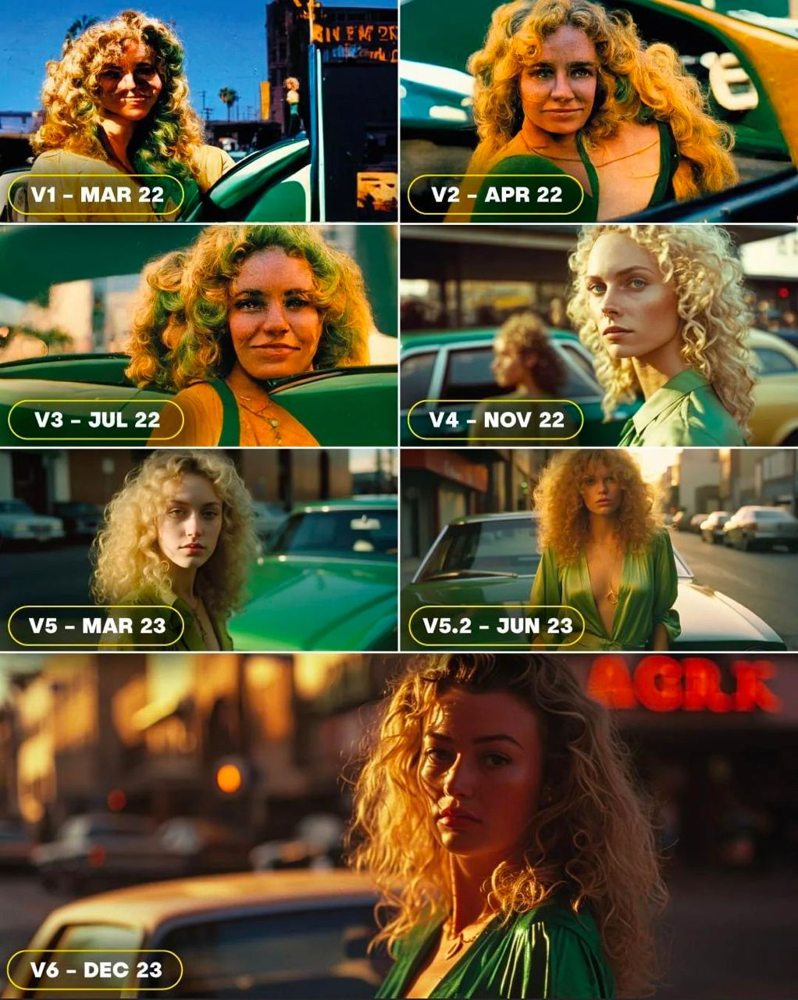
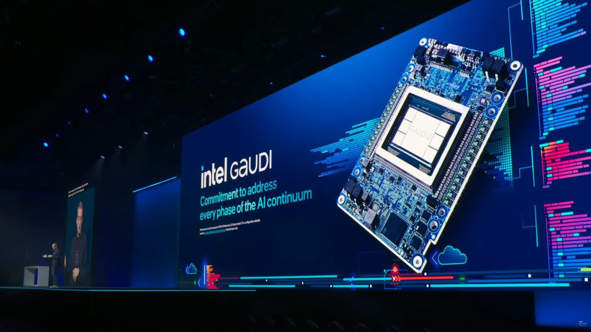
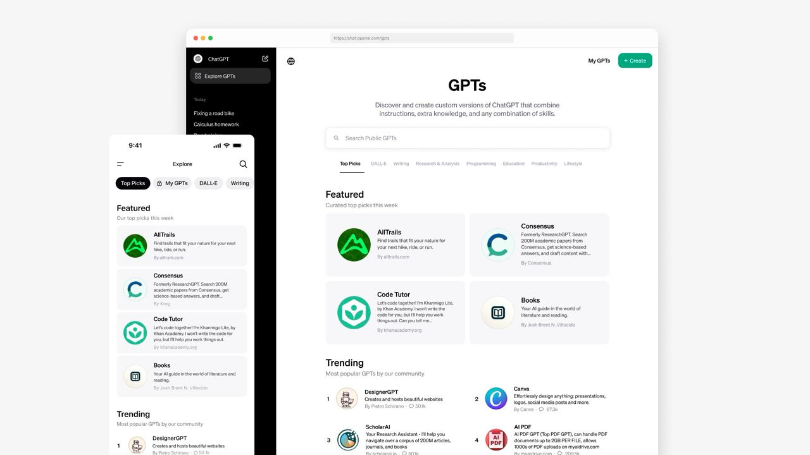
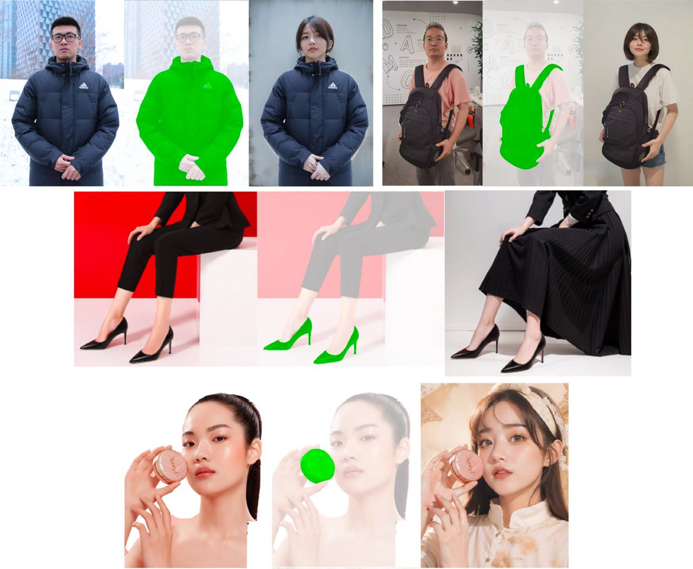
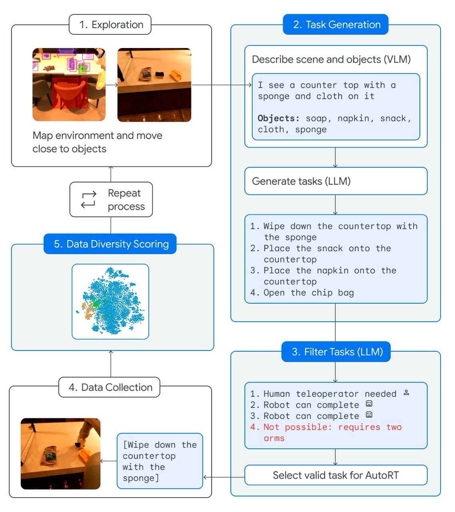
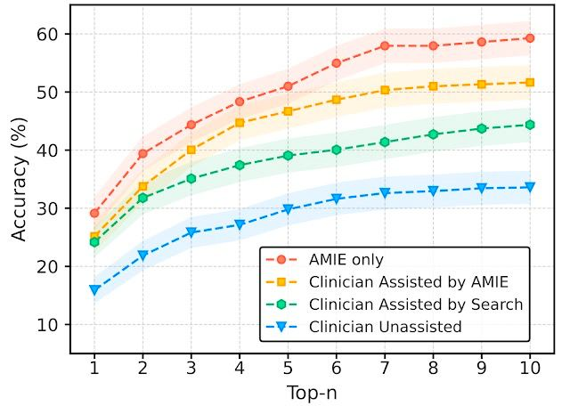
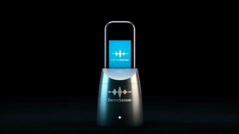

متأسفانه به دلیل مشغله زیاد فرصت انتشار شماره سیزدهم وسط دی ماه را نداشتم به همین دلیل بعد از یک ماه شماره سیزدهم با پایان یافتن دی منتشر میشود. تعداد خبرها بسیار زیاد و متنوع است، از طرفی این شماره اخبار کل دیماه را نیز در بر دارد به همین جهت جز شمارههای طولانی خواهد بود.
۱. نسخه ۶ سرویس Midjourney اخیراً منتشر شد. در این تصویر بهبود تصاویر تولید شده توسط این مدل هوشمصنوعی در حدود یک و نیم سال گذشته را مشاهده میکنید. Midjourney در زمینه خلق تصویر با هوشمصنوعی مولد با مدلهای DALL.E، Google Imagen و Stable Diffusion رقابت میکند.

۲. دستاورد چشمگیر اپل برای اجرای مدلهای زبانی در تلفنهمراه 📱
مدلهای بزرگ زبانی برای اجرا به مموری زیادی نیاز دارند از این رو برای اجرای آن در تلفنهای همراه هوشمند محدودیت ایجاد میشود. در آزمایش جدیدی که توسط مهندسان اپل انجام شده با معرفی دو روش جدید به نامهای windowing و row-column bundling از ظرفیت Flash Memory برای حل کمبود DRAM استفاده شده است. این روش با تطبیق میزان مصرف مموری براساس محدودیتهای سختافزاری به شکل بهینهای از منابع موجود استفاده میکند. طبق نتایج ارائه شده، این روش میتواند مدلهای با سایز دو برابر DRAM را در تلفن همراه با سرعت اجرای (inference) بسیار بیشتر از روشهای رایج لود کردن مدل در CPU یا GPU اجرا کند. ارائه این دستاورد امیدها را برای فراهم کردن قابلیتهای خارقالعاده مدلهای بزرگ زبانی در تلفنهای همراه هوشمند بسیار کرده است. به نظر میرسد اپل که در این رقابت تنگاتنگ Generative AI ساکت مانده، نقشههای بزرگی را در سر میپروراند. برای مطالعه جزئیات فنی بیشتر این مقاله را بخوانید.
۳. رقابت Intel با NVIDIA و AMD برای تولید چیپهای هوشمصنوعی
اخیراً شرکت Intel نسخه جدید چیپ مخصوص هوشمصنوعی مولد خود را با نام Gaudi3 معرفی کرد. این چیپ در سال ۲۰۲۴ میلادی به دست مشتریان خواهد رسید و قرار است با نمونههای مشابه که توسط NVIDIA و AMD ساخته شده رقابت کند. تولید چیپهای Gaudi توسط اینتل از سال ۲۰۱۹ آغاز شده است. اینتل علاوه بر معرفی این چیپ، به پردازندههای مخصوص کامپیوتر شخصی (Core Ultra) و سرور (Xeon) نیز قسمتی به نام NPU اضافه کرده تا سرعت اجرای مدلهای هوشمصنوعی در این پردازندهها افزایش پیدا کند. ترند شدن هوش مصنوعی در سالهای اخیر منجر به رشد تقاضا برای چیپهای هوشمصنوعی شده است. به همین دلیل ارزش شرکت NVIDIA در این برهه زمانی چند برابر شده است. شرکتهای Intel و AMD نیز در تلاش هستند از این فرصت استفاده کنند (منبع خبر).
همچنین برای آشنایی بیشتر با صنعت تراشه این مقالات را بخوانید:

۴. ربات انساننمای Figure قهوه درست میکند! ☕️
شرکت رباتیک Figure دقت و ظرافت ربات انساننمای خود به نام Figure 01 را با تهیه یک لیوان قهوه در معرض نمایش گذاشت. ربات Figure 01 با ۱۰ ساعت ویدئو تهیه قهوه توسط انسان آموزش داده شده است (👈 مشاهده ویدئو).
۵. انتشار فریمورک MLX توسط اپل
تیم یادگیری ماشین اپل فریمورک MLX را برای توسعه و استقرار سادهتر مدلهای هوشمصنوعی در پردازندههای سری M اپل موسوم به Apple Silicon منتشر کرد. این فریمورک برای پردازشهای برداری در یادگیری ماشین با الهام از فریمورکهای مشابه نظیر Numpy و PyTorch طراحی شده است. برای جزئیات فنی بیشتر ریپوزیتوری گیتهاب این پروژه را از اینجا مشاهده کنید.
۶. گزارش رویداد CES 2024 | معرفی محصولات جدید مبتنی بر هوشمصنوعی
نمایشگاه CES یکی از بزرگترین رویدادهای تکنولوژی در دنیاست که هر ساله با حضور کمپانیهای تکنولوژی و علاقهمندان آن برگزار میشود. رویداد امسال CES 2024 در لاسوگاس آمریکا در حال برگزاری است (۹ الی ۱۲ ژانویه). امسال نیز مانند سالهای گذشته نوآوریها و محصولات جدید تکنولوژی معرفی شده است. همانطور که انتظار میرود، نقش هوشمصنوعی در این رویداد نیز پررنگ بوده و محصولات جدیدی مبتنی بر آن معرفی شده است.
👈 برای مطالعه جزئیات بیشتر درباره این خبر اینجا را بخوانید.
۷. استفاده از ChatGPT در خودروهای فولکسواگن 🚘
فولکسواگن خودروساز بزرگ آلمانی اعلام کرد از فصل دوم سال جاری چتبات ChatGPT با دستیار صوتی ماشینهای این کمپانی (IDA) یکپارچه خواهد شد. به این ترتیب قابلیتهای این چتبات قدرتمند به تعامل بین خودرو و راننده کمک خواهد کرد. این یکپارچهسازی در ابتدا برای مشتریان اروپایی این کمپانی فعال خواهد شد (منبع خبر).
۸. بالاخره GPT Store به صورت رسمی در دسترس قرار گرفت. کاربران OpenAI میتوانند نسخههای کاستومایز شده خود از مدل هوشمصنوعی این کمپانی را در این استور برای فروش منتشر کنند. GPT Store در کنفرانس OpenAI Dev Day که در آبان ماه برگزار شد معرفی شده بود.

۹. استفاده از هوشمصنوعی برای کاهش زمان کشف دارو 💊
شرکت Isomorphic Labs در یک قرارداد به ارزش ۳ میلیارد دلار با شرکتهای داروسازی Novartis و Eli Lilly میخواهد زمان کشف دارو را به نصف کاهش دهد. Isomorphic Labs توسط گوگل برای کشف دارو با استفاده از هوشمصنوعی در سال ۲۰۲۱ راهاندازی شده است. هوشمصنوعی با پیشبینی ترکیبات بیوشیمیایی، ترکیبات محتمل برای فراهم کردن اثرات مطلوب در بدن انسان را پیشنهاد میدهد. این موضوع میتواند کشف داروهای جدید را که فرآیندی زمانبر و پرهزینه بوده تسهیل کند (منبع خبر).
۱۰. معرفی مدل MagicVideo-V2 برای تولید ویدئو از متن
شرکت ByteDance (شرکت مادر TikTok) مدل جدیدی به نام MagicVideo-V2 را برای تولید ویدئوی کوتاه از متن معرفی کرد. این مدل در ابتدا یک تصویر با رزولوشن بالا تولید کرده و سپس از آن تصویر دنبالهای از حرکات را تهیه میکند. برای دیدن نمونههای بیشتر و مقایسه آن با مدلهای مشابه نظیر pika اینجا را مشاهده کنید.
۱۱. معرفی مدل ReplaceAnything
شرکت علیبابا مدل جدیدی به نام ReplaceAnything را برای ویرایش تصاویر معرفی کرد. با استفاده از این مدل میتوانید لباس شخص و یا پس زمینه تصویر را تغییر دهید. برای اینکار ابتدا شی یا چهره مورد نظر را از تصویر Foreground انتخاب کرده تا در تصویر Background به همان شکل قرار داده شود. علاوه بر آپلود تصویر پسزمینه میتوانید با نوشتن Prompt پسزمینه تصویر را شرح دهید. برای تست این مدل وارد تب Image Create از اینجا شوید.

۱۲. استفاده از مدلهای بزرگ زبانی (LLM) برای عملیاتی کردن رباتها 🤖
کمپانی Google DeepMind روش جدیدی به نام AutoRT را برای عملیاتی کردن رباتها در محیطهای جدید ارائه کرد. در روش AutoRT ربات تصویر محیط اطراف را برای مدل VLM ارسال میکند. مدل VLM محیط و اشیای موجود در آن را شناسایی کرده و با استفاده از LLM مجموعهای از وظایف را مخصوص آن محیط پیشنهاد میکند. سپس وظایف پیشنهاد شده براساس شرایط فیلتر شده و برای اجرا به ربات ارسال میشود. این پروسه دوباره تکرار میشود. این مراحل طی پنج مرحله در تصویر نمایش داده شده است. در این آزمایش،AutoRT به مدت ۷ ماه در ۴ ساختمان مختلف تست شده است. این روش میتواند برای کنترل و عملیاتی کردن گروهی از رباتها توسط مدلهای VLM و LLM مرکزی مورد استفاده قرار بگیرد. آزمایش AutoRT نشان میدهد که هوشمصنوعی مولد چگونه میتواند رباتها را در محیطهای جدید با کمترین دخالت انسان عملیاتی کند. کمبود دیتاست برای آموزش ربات در محیطها و عملیات مختلف یکی از چالشهای اساسی در توسعه رباتیک است. برای مطالعه جزئیات فنی بیشتر اینجا را بخوانید.

۱۳. گوگل ریسرچ سیستم جدیدی به نام AMIE را برای تشخیص و مکالمه پزشکی معرفی کرد. 👨⚕️
سیستم AMIE از یک LLM استفاده کرده که برای تشخیص پزشکی بهینه شده است. این سیستم با پرسیدن سوالهای مناسب طی مکالمه تشخیص خود را بهبود میبخشد. علاوه بر آن با ایجاد همدردی تلاش میکند با کاربر ارتباط ایجاد کرده تا شرایط یک مکالمه اثربخش را فراهم کند. طبق نتایج ارائه شده از نظر دقت و کیفیت، AMIE حداقل به اندازه پزشک مراقبتهای اولیه عملکرد داشته است. به عقیده گوگل معرفی چنین سیستمهایی میتواند دسترسپذیری و کیفیت مراقبتهای پزشکی را برای عموم افزایش دهد (منبع خبر).

۱۴. رقابت DeepMind با برنده مدال طلای المپیاد ریاضی | معرفی مدل AlphaGeometry 📐📏
شرکت Google DeepMind مدل جدیدی به نام AlphaGeometry را برای حل مسائل هندسه معرفی کرد. بنا بر ادعای DeepMind این مدل میتواند در حد دارنده مدال طلای المپیاد ریاضی مسائل هندسه را حل کند. AlphaGeometry در زمان استاندارد این رقابت ۲۵ سوال از ۳۰ سوال را به درستی حل کرده است. این ۳۰ مسأله از میان مسائل سالهای ۲۰۰۰ الی ۲۰۲۲ المپیاد ریاضی انتخاب شدهاند. AlphaGeometry با الهام از کتاب معروف Thinking, Fast and Slow از دو بخش LLM و Symbolic Engine تشکیل شده است. بخش LLM یا مدل زبانی مشابه قسمت سریع ذهن عمل کرده و ایدههای اولیه برای حل مسأله را به سرعت ارائه میدهد. مدلهای بزرگ زبانی در شناسایی الگوها به خوبی عمل کرده ولی در استنتاج دارای ضعف هستند. برای پوشش این ضعف بخش Symbolic Engine وارد عمل میشود. بخش Symbolic Engine براساس قوانین منطقی نتایج را استنتاج کرده و ارائه میدهد. نتایج این مدل در مجله nature منتشر شده است.
👈 برای مطالعه جزئیات بیشتر اینجا را بخوانید.
۱۵. اپتیموس در حال تا کردن لباس: طبق گفته ایلان ماسک اپتیموس هنوز توانایی تا کردن لباس به صورت مستقل و عمومی را ندارد. این ویدئو در شرایط خاص تهیه شده است (👈 مشاهده ویدئو).
۱۶. افزایش سرمایه ۷۳.۶ میلیون دلاری موتور جستجوی Perplexity AI
موتور جستجوی Perplexity AI در جدیدترین دور افزایش سرمایه توانست ۷۳.۶ میلیون دلار از شرکتها و افراد مختلف سرمایه جذب کند. در میان سرمایهگذاران جدید نام جف بزوس بنیانگذار آمازون نیز دیده میشود. به این ترتیب ارزش این موتور جستجو به ۵۲۰ میلیون دلار رسید. موتور جستجوی Perplexity AI از سال ۲۰۲۲ راهاندازی شده و با استفاده از هوشمصنوعی مولد تلاش میکند در قالب یک چتبات نتایج مرتبط با جستجو و یا سوال کاربر را ارائه دهد. Perplexity علاوه بر مدلهای خود امکان استفاده از مدلهای معروفی نظیر GPT-4، Gemini و Claude را نیز برای کاربر فراهم میکند. استفاده از هوشمصنوعی مولد برای جستجو حوزه جدیدی است که فعلاً نمیتوان درباره آینده آن با قطعیت اظهار نظر کرد. تهیه و راهاندازی مدلهای بزرگ زبانی بسیار پرهزینه بوده و امکان دارد در آینده نه چندان دور چنین محصولی صرفه اقتصادی نداشته باشد. موتورجستجو مشابه دیگری به نام you.com نیز در حال فعالیت است (منبع خبر).
۱۷. سودای ایلان ماسک برای سیطره بر تسلا
ایلان ماسک در پلتفرم X در پاسخ به یکی از کاربران اعلام کرد برای پیشتازی و رهبری تسلا در هوشمصنوعی و رباتیک نیاز دارد مالک ۲۵ درصد از سهام تسلا باشد تا اکثریت آرای هیئت مدیره را در اختیار بگیرد. در حال حاضر ایلان ماسک مالک حدود ۱۳ درصد از تسلاست. ماسک بخشی از سهام خود را در سال ۲۰۲۲ به خاطر خرید توئیتر فروخت. قابل ذکر است که با تغییر وزن آرای اعضای هیئت مدیره نیز قبلاً موافقت نشده است. ماسک همچنین اعلام کرده در صورت فراهم نشدن شرایط برخی از ایدههای خود در حوزه هوشمصنوعی را با سایر شرکتها پیش خواهد برد. در سالهای اخیر تسلا با تمرکز روی هوشمصنوعی خود را به عنوان یکی از کمپانیهای پیشرو در این عرصه معرفی کرده است. پس از معرفی xAI در سال گذشته و ورود ایلان ماسک به رقابت AGI، انتظار میرود از تواناییهای تسلا و X برای پیشبردن اهداف xAI بیشتر استفاده شود (توییت ایلان ماسک).
در رابطه با این موضوع این مطالب پیشنهاد میشود:
۱۸. ورود مارک زاکربرگ به رقابت AGI | هوشمصنوعی اپنسورس!
مارک زاکربرگ موسس Facebook و مدیرعامل متا در یک پیام ویدئویی اهداف و تمرکز کمپانی متا در سالهای آینده را به اطلاع مخاطبان رساند. متا نیز همانند شرکتهای OpenAI Google DeepMind و Anthropic برای ساخت AGI وارد میدان رقابت میشود. AGI بالاترین سطح از هوشمصنوعی است که در جنبههای مختلف هوش توانایی رقابت با انسان را داشته و یا حتی بهتر از انسان عمل میکند. با وجود پیشرفتهای اخیر در این حوزه، هنوز هیچ جایی یا کسی حتی به پایینترین سطح از AGI نیز دست پیدا نکرده است. توسعه اپنسورس هوشمصنوعی همواره توسط مارک زاکربرگ مدیرعامل متا و یان لیکان دانشمند ارشد هوشمصنوعی در متا مورد تاکید قرار گرفته است. به عقیده این افراد توسعه اپنسورس یکی از راههای اصلی برای ایجاد ایمنی و منتفع کردن بشر از این تکنولوژی است. در این پیام ویدئویی نیز این موضوع مجدداً تاکید شده و حتی بعید نیست در صورت دستیابی متا به AGI اقدام به انتشار اپنسورس آن کند!
👈 برای مطالعه جزئیات بیشتر اینجا را بخوانید.
۱۹. تشخیص سرطان پوست با استفاده از هوشمصنوعی
دستگاه کمپانی DermaSensor مجوز تشخیص سرطان پوست با استفاده از هوشمصنوعی را از FDA آمریکا کسب کرد. این دستگاه با ۹۶ درصد دقت میتواند سرطانهای رایج پوست را تنها با اسکن پوست و بدون عوارض جانبی تشخیص دهد. این دستگاه از الگوریتمهای هوشمصنوعی برای تشخیص الگوهای سرطان در پوست استفاده میکند. برای استفاده از آن باید حق اشتراک ماهانه پرداخت شود. این حق اشتراک برای پنج مریض در ماه ۱۹۹ دلار و برای استفاده نامحدود در ماه ۳۹۹ دلار است. بنا بر گفته مدیرعامل این شرکت، توسعه این محصول حدود ۱۲ سال به طول کشیده و در این مدت میلیونها دلار سرمایهگذاری روی آن انجام گرفته است. کسب این مجوز میتواند مسیر را برای تایید دستگاهها و تجهیزاتی که از هوشمصنوعی در پزشکی استفاده میکنند هموارتر کند (منبع خبر).

اگر مایل به دریافت خبرنامه هوشمصنوعی دومان در پستالکترونیک خود هستید از اینجا ثبتنام کنید. همچنین میتوانید با عضویت در کانال تلگرام این خبرنامه در سریعترین زمان در جریان اخبار جدید قرار بگیرید. برای مطالعه شمارههای قبلی اینجا را نگاه کنید.


دیدگاه خود را بنویسید